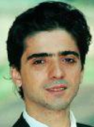

David Li received his B.S. and M.S. in Mechanical Engineering at Shandong University, P.R. China.
His experiences include teaching in China and U.S., as well as consulting for various technology
companies worldwide. He has a deep understanding of both American and Chinese educational system.
For the last 20 years, he has helped many Chinese students study abroad in the U.S. starting in
middle school and all the way through college.
Miodrag Micic

Dr. Miodrag Micic received his Ph.D. and M.S. in chemistry from University of Miami, Coral Gables, FL;
M.T.M. from Washington State University, WA. His experiences include consulting for biotech companies,
leading research teams, and teaching in U.S. and Europe. Dr. Micic has a strong network with many
universities throughout the U.S. and he always strives to help international students achieve their dreams.